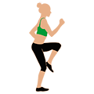
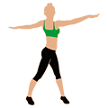
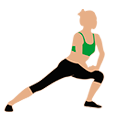

Como realizar un ejercicio perfecto
calentar los musculos antes de hacer una actividad
- Empezar caminando
- Aumentar el ritmo hasta acabar en carrera suave
- Bajar el ritmo lentamente
calentar piernas
Para poner en marcha los musculos

- Empezar con movimientos rotatorios
- hacer activaciones en los musculos
- Incremenetar el ritmo poco a poco
Calentamiento de brazos
Independientemente de si vas al gimnasio o no

- Empezar con movimientos rotatorios y en diagonal
- Reforzamos los musculos del cuello girando lentamente la cabeza
- Para terminar hacer abdominales y lumbar
Para terminar nuestro calentamiento, pasamos a las rodillas
Tienen que estar relacionados con los movimientos que se efectuarán en la práctica

- Empezar con pases de pelota
- Tiros a porteria
- Tiros a canasta
Para terminar
Por ejemplo en el caso de un partido
- Empezar trotando
- Calentar todas las zonas articulares
- Tocar balón dando pases
- Acabar con tiros a porteria